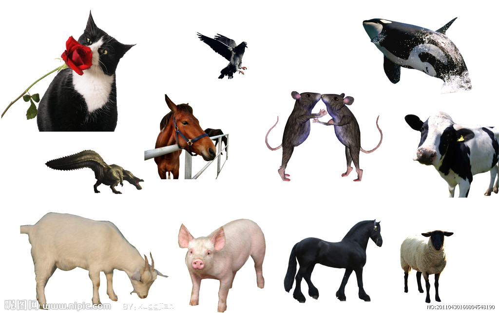

<doctype html>
<html>
   <head>
       <meta http-equiv="Content-Type" content="text/html">
	   <title>图片裁剪技术的运用</title>
	   <meta name="Keywords" content="关键词，关键词" >
	   <meta name="description" content="">
        
		<!--样式表-->
	   <style type="text/css">
	     img{border:1px;}
	    .cut{width:1024px;height:645px;background:blue;margin:0 auto;margin-top:100px;}
		.formdiv{margin:0 0 0 580px;border:1px;background-color:#FAFAD2;width:600px;}
	   </style>
	   <!--引用裁剪工具的js-->
	   <link rel="stylesheet" href="css/Jrop.css" type="tex/css"/>
   </head>

   <body>
      <!--页面的编写-->
	  <div class="cut">
	     </img>
	  </div>
	  <div class="formdiv">
	   <input type="text" name="cutImg" values="images/complex.jpg">
	    x:<input type="text" id="x" size="4" name="x">
	    y:<input type="text" id="y" size="4" name="y">
		h:<input type="text" id="w" size="4" name="w">
		w:<input type="text" id="h" size="4" name="h">
		<input type="submit" value="确认裁剪"/>
	  <div>
	  <!--引入jquery官方js-->
	  <script text="text/javascript" src="js/jquery.min.js"></script>
	    <script text="text/javascript" src="jquery.Jcrop.min.js"></script>
		<script type="text/css">
		 $(function(){
		    alert("111");
		 });
		</script>
   </body>
</html>